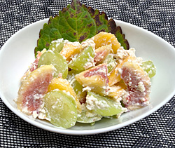

秋果の白和え
- 調理時間：40分
- （一人当たり）
- カロリー：206kcal
- たんぱく質：7.7g
- 脂質：8.7g
- 炭水化物：27.4g
- 塩分：0.8g
＜2人分＞
- シャインマスカット
- ５粒
- 柿
- １/２個
- イチジク
- １～２個
- 塩
- 適量
- ・木綿豆腐
- 150g
- ・白ごま
- 大さじ2
- ・砂糖
- 小さじ2
- ・塩
- 小さじ1/3
- ・しょうゆ
- 数滴
A
- 豆腐は下茹でして、キッチンペーパーなどに包み、重しをのせて水切りする。
- シャインマスカットは等分に切る。柿とイチジクは皮をむき、くし切りにして、塩水にくぐらせ、水気をきっておく。
- すり鉢に白ごまをいれてしっかりすりつぶす。
①の豆腐、砂糖、塩を加えてすり混ぜる。
仕上げに香りづけの醤油を数滴加える。 - ②の果物を和え衣で和える。
（食べる直前のほうが水がでなくてよい）
秋果の白和え
秋の食卓を上品に彩る柿やイチジクの白和えは絶品です。ご存知の通り秋の定番である柿はもちろん、イチジクやブドウを使っても果実の甘みと豆腐のコクが見事に調和し、洗練された美味しさが広がります。柿やブドウのビタミンC、イチジクの食物繊維、豆腐の植物性タンパク質が一度に摂れるのも魅力。美肌や腸内環境を整える、体に優しい秋果の白和えを楽しんでみませんか。